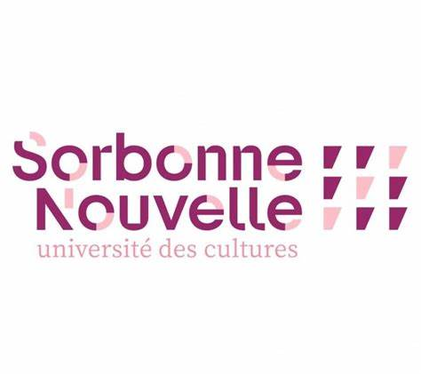
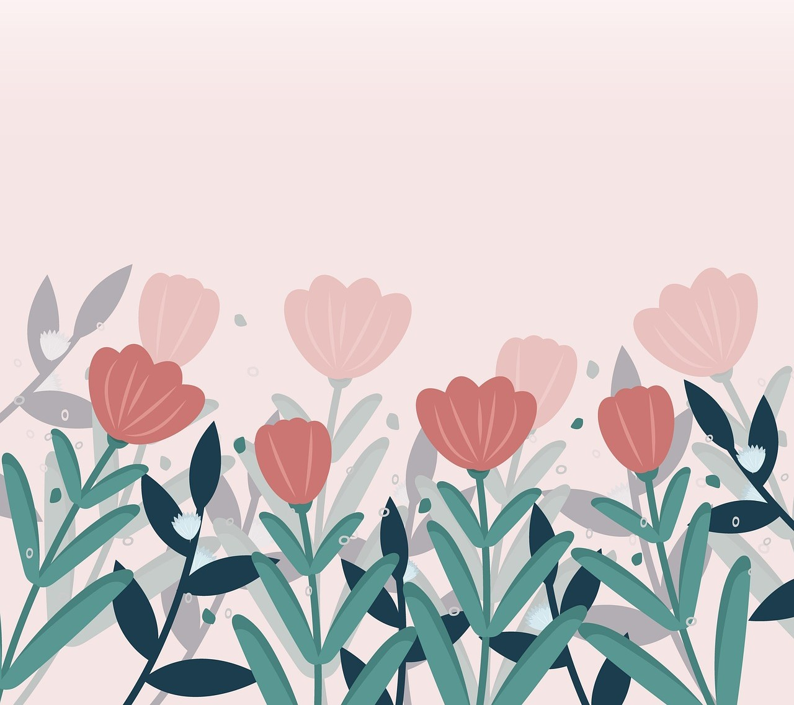

Yezza LASSILAA
Licence 3 des Sciences du Langage

A propos de moi
Mon CV des trois dernières années :
| année universitaire | Statut |
|---|
| 2024-2025 | Licence 3 Sciences du Langage |
| 2023-2024 | Licence 2 Sciences du Langage |
| 2022-2023 | Licence 1 Sciences du Langage |
Voici les cinq derniers livres que j'ai lu :
- Ainsi résonne l'écho infini des montagnes, Khaled HOSSEINI, 10/18
- La librairie de Téhéran, Marjan KAMALI, Hauteville
- Khalil, Yasmina KHADRA, Pocket
- Je suis né un jour bleu, Daniel TAMMET, Les Arènes
- Les vertus de l'échec, Charles PEPIN, Allary Editions